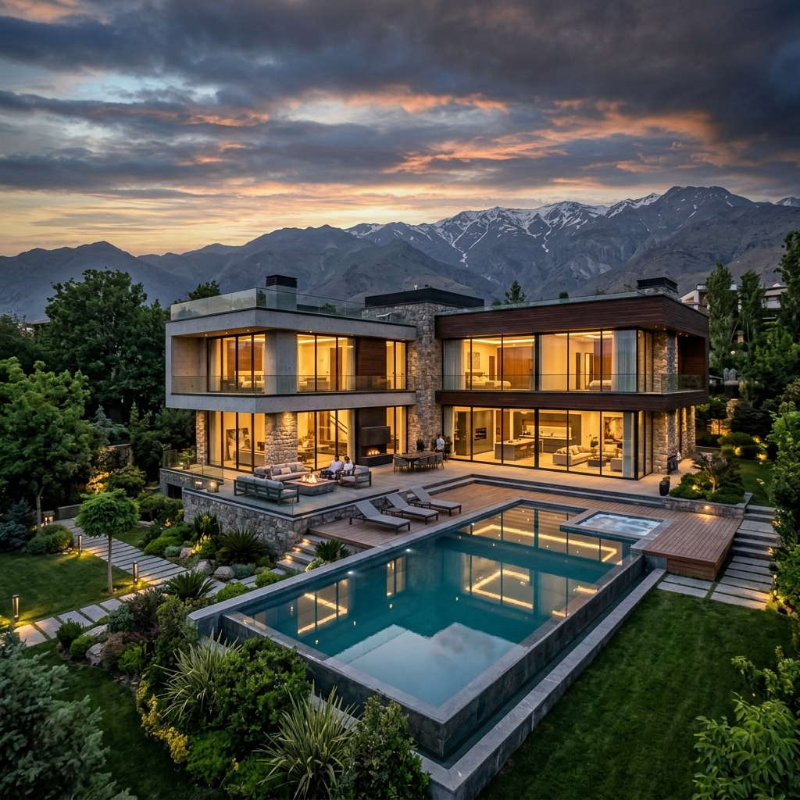

قیمت اعلامی مالک:

گروه مشاورین املاک بادیز، مرجع تخصصی خرید، فروش و سرمایهگذاری ملکی در مناطق لوکس و ییلاقی کردان، سهیلیه و تهراندشت.
املاکی که به دلیل شرایط ویژه مالی مالک، بسیار پایینتر از نرخ روز منطقه برای مدت محدود عرضه شدهاند.
فایلهای کارشناسیشده با پتانسیل رشد ارزش فوقالعاده در مناطق در حال توسعه کردان و سهیلیه.
منطقه کوهستانی و خوش آب و هوای کردان با ویلاهای لوکس و چشمانداز بینظیر. شامل برغان، ورده، سنج و سرهه با باغات کهنسال گردو و رودخانه پرآب.
قلب تپنده کردان با دسترسی عالی به امکانات شهری، بلوار شهدا و بافت ویلایی اعیاننشین با سند تکبرگ و انشعابات دائم قانونی.
دشتهای سرسبز تهراندشت و سهیلیه (سرخاب و زعفرانیه) با ویلاهای مدرن استخردار، آفتابگیر عالی و مناسب سکونت و تفریح خانوادگی.
مشخصات ملک خود را ثبت کنید تا کارشناسان بادیز پس از ارزیابی میدانی و استعلام مدارک، آن را به جامعه خریداران واقعی معرفی کنند.